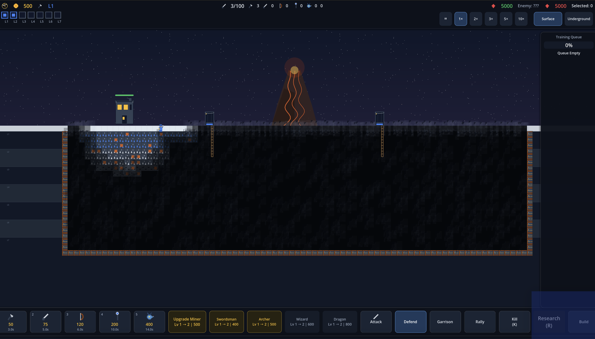
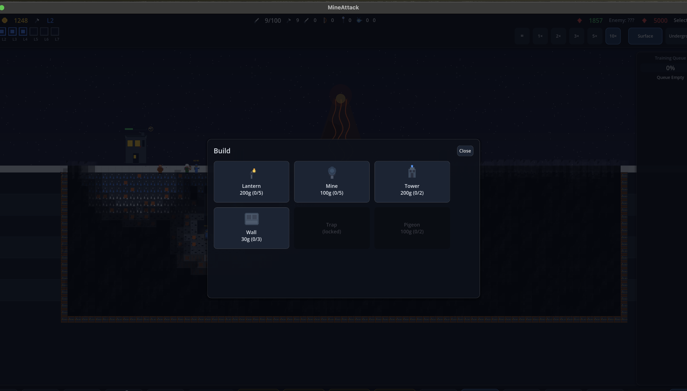

BUILD
Select blueprint Right-click to place1–6 select · ESC cancel
A · Blueprint Tray
MineAttack visual iteration
Test faster, more tactile construction flows for lanterns, mine lanterns, towers, walls, traps, and pigeon scouts without losing cost or placement-count information.


BUILD
Select blueprint Right-click to place